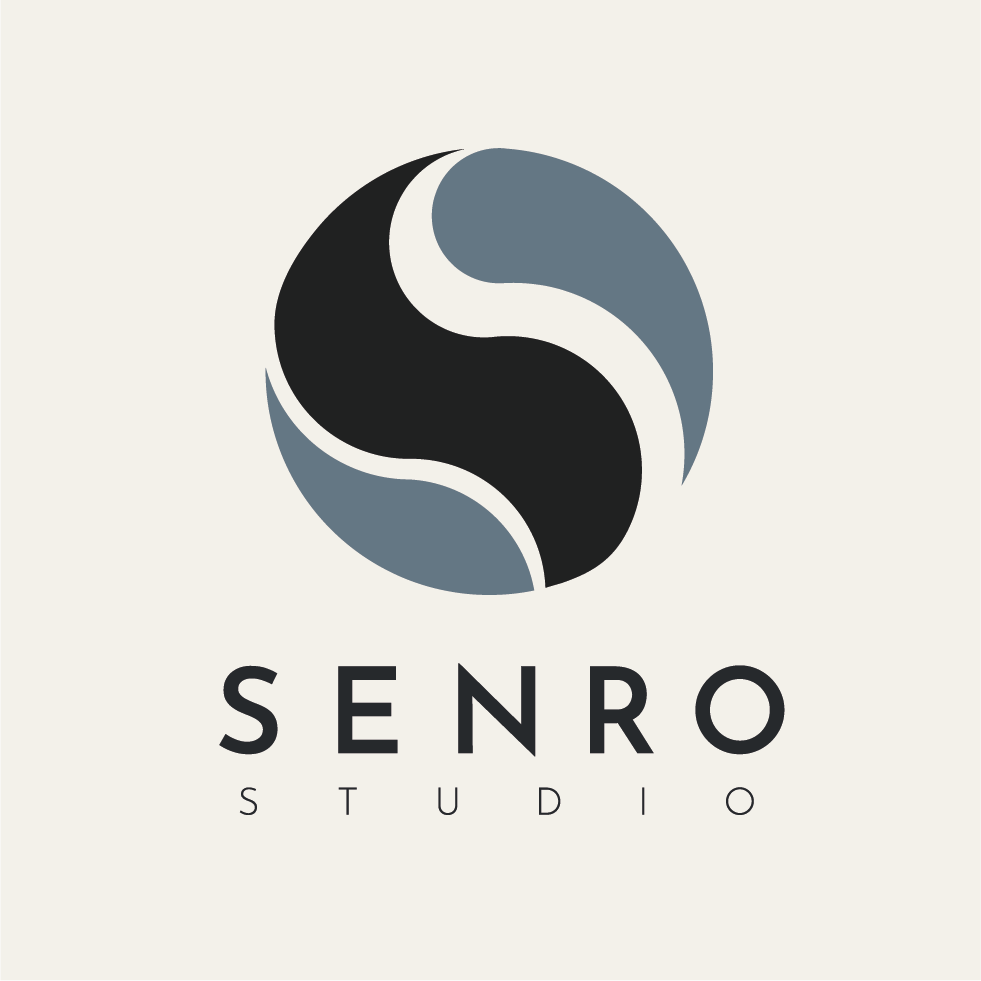
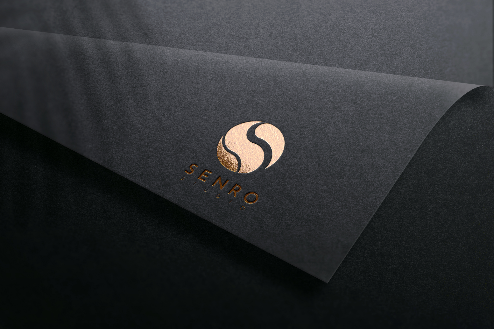
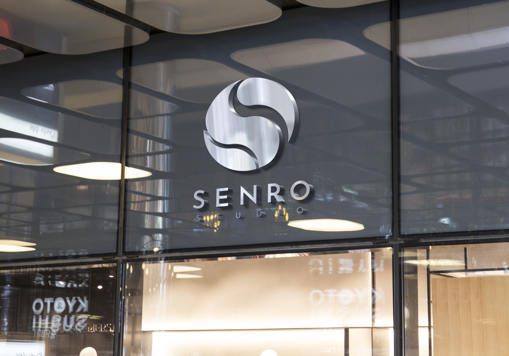

Projet scolaire et personnel
Senro Studio Logotype
Création d'une identité visuelle afin de concevoir le logo d'une agence de communication. Ce logo est pensé comme marqueur de sa communication externe. Le projet est fictif et conçu dans le cadre de ma formation en DEUST WMI, mais me permet de construire également mon logo d'artiste.

-

Mockup d'une devanture de magasin -

Mockup 2 du logo -

Mockup 3 du logo
Senro Studio Logotype — Le portfolio complet
Vous trouverez dans ce portfolio toute ma démarche pour arriver au résultat final de Senro Studio.
Consulter le portfolio PDF